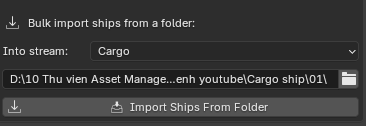

BlendReal® Spaceship Traffic
-
Procedural Blender add-on for spaceship traffic — automatically generates lane/intersection networks, avoids buildings using real raycasts, and performs true ship-to-ship avoidance using a Space-Time Reservation system. Includes a flight path toolkit (7 NURBS Path presets + Follow Curve + Auto Bank), mesh utilities, and an optional engine exhaust effect export to Unreal Niagara via BlendReal®.
-
The add-on operates in Standalone Mode — Unreal Engine is not required — all traffic features run entirely within Blender.
-
Alternatively, the Spaceship Trail (Export to UE) feature requires the BlendReal® - Cinematic Pipeline UE5 add-on to automatically transfer Niagara parameter values into UE.

⚙️System Requirements
- Operating System: Windows 10/11 64-bit
- Blender: 4.5, 5.0, or 5.2 (LTS)
- Unreal Engine is not required for the main traffic features
- BlendReal® (separate add-on) is required to use the Spaceship Trail feature
🛠️Installation
- In Blender, go to Edit > Preferences > Add-ons
- Click Install from Disk... and select the
.zipfile - Tick the checkbox next to BlendReal® Spaceship Traffic to enable the add-on
- Open the Sidebar (press
N) in the 3D Viewport and find the Spaceship Traffic tab
🔷Basic Workflow
- Prepare Your Models: have your spaceship models ready (in
.blendformat, with one or several ships per file), along with building/obstacle models in the scene - Create Collections: click Create Collections (Ships + Buildings) to automatically create the required Collections with the correct names (automatically based on Single Stream or 3 Streams mode)
- Import Ships: select the folder containing the spaceship
.blendfiles in Ship File Folder, choose which stream to import them into (Import Into Stream), then click Import Ships From Folder - Add Buildings to the Collection: manually drag and drop the building objects into the created Collection in the Outliner
- Click 🪄 Auto-Fill Lane Spacing (details below) — this is the recommended first step: the add-on automatically pre-computes most of the lane spacing values based on the actual size of the ships you imported, instead of you having to guess numbers by hand
- Preview the layout (optional): click Create Wireframe, then adjust the Lane/Streams/Formation fields to see whether the ship placeholder boxes are arranged the way you want (see Live Layout Preview below)
- Click ▶ Generate Traffic — the add-on automatically generates animation for all ships, with real building and ship avoidance
- To start over: click ✕ Clear Animation
- To view the system report: click 🔍 Check Collections (output is displayed in the System Console)
💡 Tip for new users: if you don't want to hand-tune every parameter, simply follow Import Ships → Auto-Fill Lane Spacing → Generate Traffic and you'll immediately get a reasonable traffic layout. The sections below are only needed when you want to fine-tune things further.
✨Detailed Features
Stream Modes
- Single Stream (disable "Split Into 3 Separate Streams"): all ships use a single Collection and a single speed multiplier
- 3 Streams (enabled by default): separate Civilian / Cargo / Military into their own Collections — each stream has its own speed multiplier (default: Civilian ×0.85, Cargo ×0.6, Military ×1.35), with separate non-overlapping lane areas, while still sharing a single Space-Time Reservation system to ensure proper avoidance at intersections between streams
Related fields: - Split Into 3 Separate Streams — toggles the 3-stream mode on/off - Speed × (Civilian / Cargo / Military) — a per-stream speed multiplier, applied on top of the shared random speed range (see the Flight Speed section below) - Distance Between Streams — the horizontal spacing between the lane areas of the 3 streams, so they don't overlap

Traffic Lane Engine — Lane Network
This is the most important group of fields — it defines the shape of the entire traffic network.
- Number Of Rows / Number Of Columns — the number of rows × columns of the Intersection Grid. The higher these values, the wider the traffic map and the more intersection points it will have
- Distance Between Adjacent Intersections — the spacing between two neighboring intersections in the grid. This is the single parameter with the biggest impact on overall scale — adjust it first, based on the size of your scene
- Lanes Per Road Cluster — the number of lanes in EACH row/column of the grid (not the total number of lanes in the entire scene) — always use an EVEN number, since every 2 adjacent lanes are paired to form one two-way "road" (one direction each way)
- Distance Between Lanes — the distance between two neighboring two-way "roads". Increase this if the roads look too close together in the preview
- Two-Way Distance — the distance between the 2 opposing lanes within the SAME "road" — should be set MUCH smaller than Distance Between Lanes, so it still reads as "one two-way road" rather than two separate roads
- Number Of Altitude Levels — the number of altitude (Z) levels flying simultaneously within one stream
- Distance Between Levels — the spacing between two adjacent altitude levels
- Horizontal Offset Between Levels — the alternating horizontal offset between even/odd levels, giving the layout a more natural look instead of levels stacked in rigid straight columns
- Lowest Level Altitude (Z) — the lowest altitude, used as the base from which the levels above it are stacked
- Random Seed — change this value to get a different traffic layout (ship-to-lane assignment, phase offsets...) without adjusting any other parameter
🪄 Auto-Fill Lane Spacing (recommended): instead of manually computing the spacing values above, click this button to have the add-on automatically calculate Distance Between Lanes, Distance Between Levels, and Two-Way Distance based on the actual radius of the largest ship in each stream (Civilian/Cargo/Military computed separately). This should always be the first step after all your ships are imported — hand-picked numbers are usually either too small (ships overlapping) or too large (a sparse, wasteful layout) compared to your actual ship sizes.

Building Avoidance — Building Collision Avoidance
Raycast-based path detection + actual AABB checks between the two points. When a path is blocked, the add-on attempts the following in order: 1. Fly OVER the building (above the Building Overflight Height), then re-check both newly created path segments to ensure they are clear 2. If still blocked, gradually shift horizontally (Horizontal Offset Step), testing both sides 3. As a final fallback, fly to a safe altitude above both the start and end points
Related fields: - Building Overflight Height — the minimum height that must be cleared above a building's roof when flying over it - Horizontal Offset Step — the step size used each time the add-on tries to sidestep a building horizontally - Building Collision Margin — the safety margin around a building; the larger it is, the further ships will fly from the building

Ship-Ship Avoidance — Space-Time Reservation
This is NOT simple randomization — each newly spawned ship is checked against the minimum distance from ALL previously "reserved" ship trajectories, calculated correctly based on overlapping time intervals (not just static distance).
Related fields: - Safety Distance (Ship Hull Outer Edge) — safety distance measured from the OUTER EDGE of the ship hull (automatically adds the actual radius of both ships, calculated from bounding box × scale) — NOT center-to-center - Staggered Slots — Horizontal / Vertical — staggered formation dimensions allowing multiple ships to share a single lane without overlapping - Vertical/Horizontal Step Ratio — the ratio between the vertical and horizontal step of the staggered formation — lower this value if the staggered altitude levels are being pushed up too high - Fallback Delay Step / Max Delay Attempts — a fallback delay mechanism used ONLY when 2 ships would occupy exactly the same formation slot (the primary avoidance mechanism is spatial, not temporal) - Group Ships By Size + percentage threshold — when enabled, ships of similar size are grouped into the same lane, avoiding a situation where a lane full of small ships gets spaced out according to the largest ship in the whole stream
After Generate Traffic, the add-on clearly reports the number of ships that could not fully avoid collisions + suggests which parameters to increase.

Flight Speed
- Speed Min / Speed Max — the random speed-factor range applied to each individual ship (multiplied further by the per-stream Speed × described in Stream Modes)
- Base Frame Count — the "reference" number of frames it takes a ship to fly an entire lane at a speed factor of 1
- Timeline Length (frame_min) — the length, in frames, of the displayed animation window
⚠️ Important note when increasing speed: if you push Speed Min/Max or Speed × much higher relative to Timeline Length, a ship may finish flying its entire lane in just a few dozen frames — while the displayed timeline window might be several hundred or thousand frames long. The result is that ship will "flash by" very quickly at its own moment in time, then sit FROZEN for most of the remaining timeline — making it look, overall, like "most ships are moving slowly or not moving at all." This isn't a bug — if you want to see many ships moving clearly throughout the whole video, either keep speed moderate or shorten Timeline Length accordingly whenever you raise the speed.
Import & Ship Organization
- Import Ships From Folder: batch import all Objects from all
.blendfiles in a folder, with a progress bar + elapsed time counter directly in the viewport, automatically skip Cameras/Lights, and remember previously imported files to prevent duplicate imports - Create Collections: automatically create Collections using the exact names of the defined fields, with a single click

👁️ Live Layout Preview
This group of features lets you quickly preview how ships will be arranged according to Lane/Streams/Formation, before running the full (heavier) collision-avoidance system on a scene with many ships.
- Create Wireframe — creates wireframe boxes sized exactly to each ship, at each ship's current position; the real ships are temporarily hidden while previewing
- Once the boxes exist, adjust any field in Traffic Lane Engine / Stream Modes / Ship-Ship Avoidance above — the layout updates live on the boxes
- You can also click ▶ Generate Traffic while previewing — the add-on will run the full collision-avoidance pass ON THE BOXES (much faster than running it on real, detailed-mesh ships), while still using the ships' REAL radius for safety calculations
- Apply Wireframe Preview — once you're happy with the layout, click this to bring back the real ships and apply the final result to them
💡 Live Layout Preview is a tool for previewing a reasonable arrangement (lane spacing, altitude levels, density...) — the final, accurate result (real collision avoidance, real animation) always comes from clicking ▶ Generate Traffic on the real ships (via Apply Wireframe Preview, or directly if you're not using the preview).
Flight Path Tools — Flight Path Creation Tools
- NURBS Path Presets: 7 built-in shapes — Straight, Arc, Loop, S-Curve, Zigzag, Spiral, Figure-8 — spawned at the location of the selected object (or the 3D Cursor). Adjust Size/Points/Forward Axis and shape-specific parameters (Arc Angle, Amplitude, Wave Cycles, Turns, Height) in the "Adjust Last Operation" panel immediately after creation
- Follow Curve: select exactly 1 mesh + 1 curve, then click — automatically adds a managed Follow Path constraint. You only need to keyframe 2 values: Distance (actual distance in Blender units, not a 0–1 ratio) and Tilt (additional banking angle)
- Bake Auto Bank: automatically keyframes both Distance and Tilt over a frame range, calculating the banking angle based on the actual curvature of the curve (limited by Max Bank Angle, multiplied by Sensitivity)

Mesh Utilities — standalone, no BlendReal® required
- Apply Rotation / Apply Scale in batch, with a single click
- Apply MNEMO Naming Convention: batch rename using the Island_/Building_/Landscape_ prefixes (or a custom prefix) + original name + sequential numbering — adjustable starting number + digit count
- Fix Normals Per UV Island: recalculate normals per UV island in a radial outward direction, working even when Blender's default Recalculate Outside / Merge+Recalculate methods fail
- Create Proxy Collision (Convex Hull): duplicate MNEMO-named meshes, build a clean Convex Hull for each separate piece, and name them for UE to automatically recognize them as Collision; includes a Voxel Remesh fallback option

Spaceship Exhaust Trail → Unreal Niagara (optional, requires - Cinematic Pipeline UE5)
3-step workflow:
1. Select which ships/collections have trails (an Include/Exclude list, live-linked to Collections, or select individual ships)
2. Compute & Preview Trail Points: automatically calculate trail attachment points based on each ship's bounding box + Nose Axis, displayed as draggable Empty markers in the viewport (paired markers are automatically synchronized)
3. Apply Marker Positions to Export Data: write the final positions to the export data
Niagara parameters can be adjusted directly from Blender: Hot Phase Duration, Noise Intensity, Trail Lifetime, Trail Opacity, Ribbon Width Ratio, with individual trail colors per stream (or a single shared color when 3 Streams are disabled). Use Scan for Trail Systems to scan the installed Trail Package folder and automatically find and select the correct Niagara System path.
By default, trail points are only recalculated for ships that do not already have data (safe — manually adjusted markers will not be overwritten). Use Recompute ALL Ships when needed, with confirmation before overwriting existing data.

Config Preset
- Save/Load/Delete custom-named presets for all traffic settings (JSON) — switch between different configurations instantly.

Other Options
- Ship Nose Axis: select the correct local axis that the ship's nose points along (if the ship flies "upside down" or "sideways" after Generate, change this value)
- Interpolation Type: Linear (100% match when exported to UE via BlendReal, with both export modes) or Bezier (smoother, but only matches exactly when BlendReal uses the "Every Frame" mode)
📄License & Source Code
- You should have received a copy of the GNU General Public License along with this program. If not, see http://www.gnu.org/licenses/.
- The installation package includes the add-on's Python (
.py) source files packaged in a.ziparchive.
💬Support
For any questions or update requests, please contact us through the BlendReal® Discord Support channel.
❓FAQs
✅Does this add-on work independently?
Yes — all traffic simulation (lanes, building avoidance, ship avoidance, and animation) runs entirely within Blender. Only the Exhaust Trail feature requires the BlendReal® - Cinematic Pipeline UE5 add-on.
✅When do I need to use it together with the BlendReal® - Cinematic Pipeline UE5 add-on?
When you need the Spaceship Trail feature (Export to UE) to transfer Niagara parameter values into UE.
✅Ships flying in the wrong direction (upside down/sideways) after Generate Traffic?
Change the Ship Nose Axis value to match the actual nose direction of your ship model.
✅After Generate Traffic, it reports "X ship(s) COULD NOT fully avoid collisions"?
Increase Staggered Slots Horizontal/Vertical, or increase Max Delay Attempts / Fallback Delay Step.
✅Is there a way to optimize the setup time for the add-on parameters?
Yes — the fastest way is to click 🪄 Auto-Fill Lane Spacing right after importing your ships; the add-on will automatically compute most of the lane spacing based on your actual ship sizes. If you'd still like to fine-tune things by hand, just focus on a few key parameters:
- Ship speed, Distance Between Streams (Streams & Collections)
- Lowest Level Altitude (Z), Distance Between Levels (Lanes)
- Distance Between Adjacent Intersections (Intersection Grid)
✅Is the layout shown by Live Layout Preview (Create Wireframe) the final result?
Not exactly — it's a quick way to preview whether the spacing, altitude levels, and density look reasonable before running the real thing. The final, accurate result (real collision avoidance + real animation) always comes from clicking ▶ Generate Traffic on the real ships.